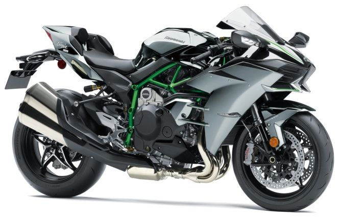

Sr. No |
Picture |
URL |
Description |
|---|---|---|---|
| 1 |  | https://im.rediff.com/getahead/2018/jul/ |
Part of the Ninja sports bike series, the superbike Ninja H2 falls in the ‘supercharged
supersport’ category.
|
| 2 |  |
https://www.thebikemarket.co.uk/media/1903478/ |
A major re-design focused on more power from a Variable Valve Timing (VVT) engine, aerodynamics and being more compact however the exhaust grew into a bit of a monster. It builds on the £2,850 cheaper base GSX-R1000 with more advanced Showa suspension, a bi-directional quickshifter, launch control and a lighter battery. |
| 3 | https://www.thebikemarket.co.uk/media/ | The S1000RR was game changing when it launched in 2005 although the asymmetric looks did divide opinion. BMW have been constantly evolving it and three generations later the 2019 model is a brand new bike. | |
| 4 | https://www.thebikemarket.co.uk/ |
It builds on the standard R1 with semi-active Ohlins electronic suspension, a new ERS NPX fork, Carbon bodywork / front fender / tail cowl and a range of apps to set custom ride modes, track all the data from the bike and to display a re-run of the race on Google Maps. |
|
| 5 |  |
https://www.thebikemarket.co.uk/media/3634213/ |
The CBR1000RR-R Fireblade is brand new for 2020 with a more compact and powerful engine, larger front discs, winglets integrated into the new bodywork, a fancy new TFT dash and a specially designed Akrapovic exhaust as standard. The range topping SP version adds a quickshifter, fancy Ohlins electronic suspension and the latest Brembo brakes. |
| 6 | https://www.thebikemarket.co. |
The standard R1 has been knocking about now since 2015 however for 2018 it gained a 2-level quickshifter, launch control, an anti-wheelie system and a fancy colour TFT dash. |
|
| 7 |  |
https://www.thebikemarket.co.uk/media/4699943/ |
The new for 2021 ZX-10R builds on the previous model with LED lighting, improved front brakes, cruise control and a modern TFT dash. They also offer the range topping ZX-10RR which is designed purely for the track however only 500 will be produced worldwide. |
| 8 |  |
https://i.pinimg.com/originals/d8/ba/10/d8ba10b211 |
The Yamaha YZF-R6 is a sport bike,[1] produced by Yamaha as a 600 class from 1999 to 2020. From 2021, production availability is limited to race-only specification in most global markets,[2][3] causing race organisers to re-align their engine eligibility criteria to encourage other manufacturers having larger than 600 cc displacements to enter road-race competition from 2022. |
| 9 | https://www.cycleworld.com/resizer/ |
The Hayabusa’s 1,340cc liquid-cooled inline-four engine achieves an even better balance of overall performance, with greater efficiency and durability, while also satisfying Euro 5 emissions standards. |
|
| 10 |  |
https://imgd.aeplcdn.com/1280x72 |
The latest edition of KTM's mid-weight sports bike is about to be released in India. The new sports motorcycle is designed to resemble its predecessors. The front end is identical to the KTM RC 200, which was just released. |